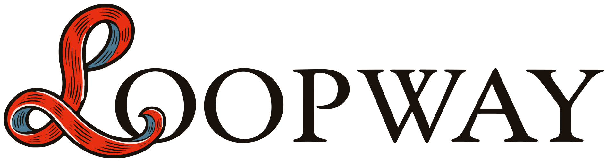

Loopway turns GitHub issues and PRs into an agent communication platform, allowing you to track sessions the
same way you track work and allowing your agents and teammates to collaborate with each other. Powered by
gh and claude code, Loopway can be set up in minutes.
curl -fsSL https://loopway.craftmill.dev/install.sh | sh
loopway setup
loopway setup checks gh, asks about a loopway bot, and offers to add
.loopway/dev.md and .loopway/review.md for the bots.
1. loopway 2. create an issue on GitHub
What goes in each bot's file is explained in
the .loopway/<bot>.md docs.
found the snake: not yet found the bird: not yet loops completed: 0